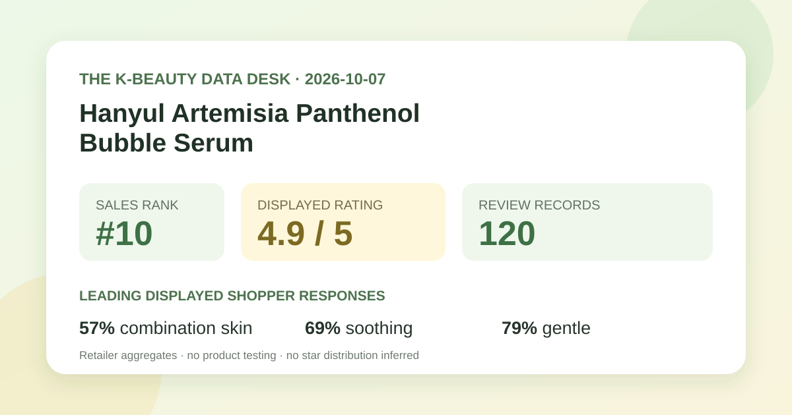
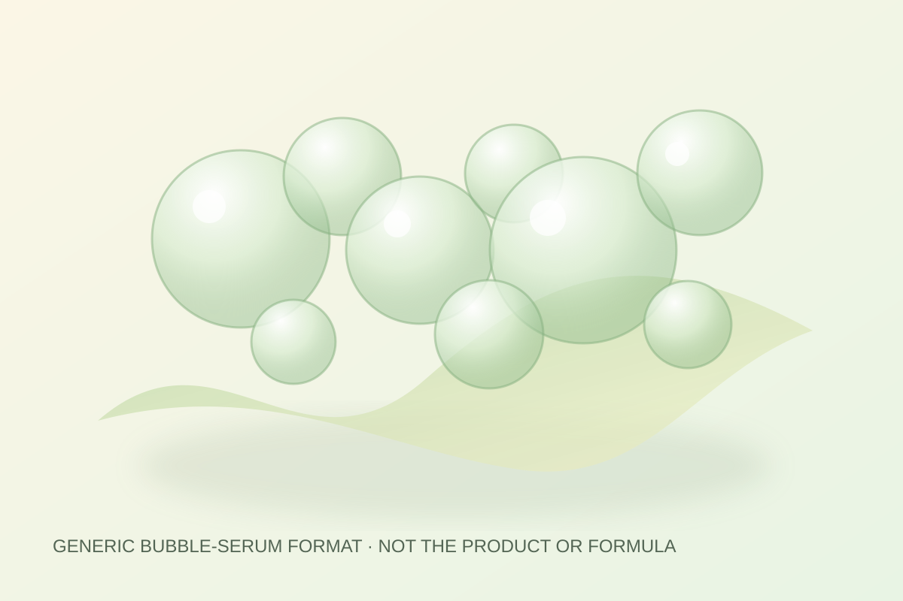

Data captured October 7, 2026. This is an independent analysis of retailer-displayed product information and anonymous aggregate review signals. I did not test the product, and no individual review, reviewer name, product photograph, or user photograph is copied, translated, or paraphrased.

The short version: Hanyul's new artemisia-panthenol bubble-serum promotion appeared at number 10 in Olive Young Korea's live skincare sales ranking. The product header and detailed review panel both displayed 4.9 out of 5 from 120 review records. Combination skin, soothing, and gentle were the leading displayed poll responses. The review base is comparatively small and new, and the page did not expose a reliable star-by-star distribution.
The displayed 4.9 average is a favorable storefront signal, and the matching total in two parts of the page makes an accidental mismatch less likely. It still compresses a modest, self-selected feedback pool into one rounded number. The interface does not establish who was invited to review, how many purchasers did not respond, whether incentives were involved, how long respondents used the product, or whether all feedback covered the same promotional option.
A base of 120 can move more visibly when new ratings arrive than a base in the tens of thousands. That does not invalidate the score, but it argues for restraint. The number is best treated as a dated early snapshot rather than a stable population estimate. A later capture could show a different count or average without either capture being wrong.
The captured review view did not provide a reliable five-to-one-star percentage breakdown. This article therefore does not reverse-engineer one from the average, sample size, visible review ordering, or individual entries. Many different rating distributions can round to 4.9, so inventing shares would create false precision.
Combination skin was the leading displayed skin-type response at 57%. That tells us which label appeared most often among the shown respondents; it does not prove the serum works better for combination skin. The remaining skin-type shares were not reliably exposed in the captured view, so they are neither filled in nor assumed to total 43% in any particular way.
Soothing led the concern poll at 69%. This is a respondent-selected category inside a shopping interface. It is not a redness score, inflammatory marker, comparison against an untreated control, or evidence that a diagnosed condition improved. The product name also contains calming language, which may influence who buys it and how people categorize their experience.
The irritation panel showed gentle as the leading response at 79%. That is useful descriptive feedback, but it is not a safety certificate. Individual sensitivity can depend on the complete current formula, application amount, frequency, damaged skin, other products, allergies, climate, and personal history. A high gentle-response share cannot guarantee that one person will avoid discomfort.

The captured Korean listing describes a 90 ml “hydration-dressing calming bubble serum” promotion with a 15 ml cream. That supports a format-level description: the product is marketed as a serum dispensed in a bubble or foam-like presentation. I did not dispense, spread, smell, layer, or wear it, so I cannot report how the actual bubbles collapse, how quickly the liquid settles, whether it feels sticky, or how it behaves under sunscreen or makeup.
The local illustration uses abstract circles and a translucent ribbon to communicate the general idea of a foaming serum. It deliberately avoids the retailer's photographs, Hanyul packaging, campaign artwork, and user-uploaded images. It should not be read as a visual claim about the real material.
“Artemisia,” “panthenol,” “repair,” “hydration dressing,” “calming,” and similar words in a listing name are not concentration data or proof of a biological effect. This analysis does not infer ingredient percentages, grade, stability, delivery, penetration, or efficacy from naming. For formula details, use the current authorized label for the exact option and market.
The captured page exposed individual review text and user imagery, but this article does not reproduce, translate, summarize, or count those entries. A few prominently sorted reviews are not a random sample and can overrepresent recent, visual, helpful, or highly engaged submissions. Using them to create frequency claims would be methodologically weak and would copy user expression that is unnecessary for this aggregate analysis.
The retailer view also did not expose a reliable anonymous automated theme summary for this candidate. Accordingly, no collective texture, scent, absorption, finish, or routine theme is asserted. The only qualitative format statement comes from the listing's own bubble-serum naming, and even that is kept separate from hands-on experience.
The captured header showed a 90 ml promotional serum with a 15 ml cream in the title, a ₩28,000 reference price, and a ₩21,000 promotional price. Gifts, coupons, stock, seller terms, delivery eligibility, and checkout price can change. The figures are a dated Korea-store snapshot, not a permanent value claim or a cross-market comparison.
Rank ten means the listing occupied the tenth slot inside the selected skincare sales list at capture time. It does not mean tenth-best serum by effectiveness, ingredients, safety, value, or review volume. Promotion, launch timing, merchandising, price, bundle size, availability, season, and short-term demand can all influence placement.
The captured product header and review panel both displayed 4.9 out of 5 from 120 linked records. That is favorable retail feedback, but the base is modest and it does not establish clinical effectiveness.
Combination skin was the leading displayed response at 57%. The figure describes representation in the shown poll, not a recommendation or guarantee for combination skin.
No. It is a retailer perception poll with an unspecified denominator and uncontrolled use conditions. Personal tolerance can differ, and the current full label matters.
No reliable star-by-star percentages were exposed in the captured view. This article reports the 4.9 average and 120-record total without estimating a distribution.
No. It is a local, brand-neutral graphic for a generic bubble-serum concept and makes no claim about the real product's appearance or behavior.
Source: Olive Young Korea product listing for the Hanyul Artemisia Panthenol Hydration-Dressing Calming Bubble Serum 90 ml promotion, accessed October 7, 2026. The source is a dynamic retail page; rank, price, availability, gifts, counts, percentages, and interface details can change after capture.
This independent article is unaffiliated with Hanyul or Olive Young. The store link contains no affiliate tracking identifier, and this site earns no commission from it.
← Back to all posts · Review-volume rankings · Skin-poll representation · Methodology